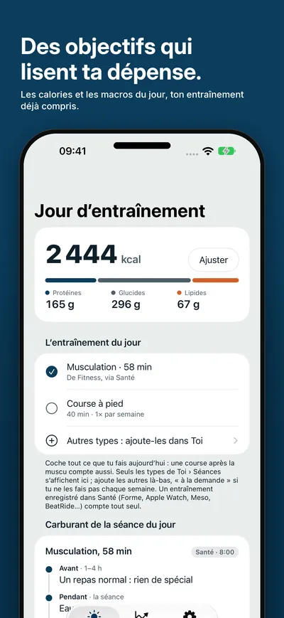
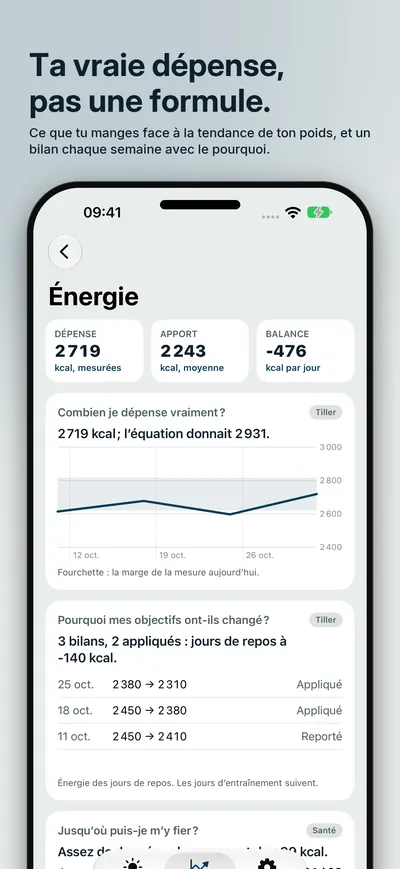
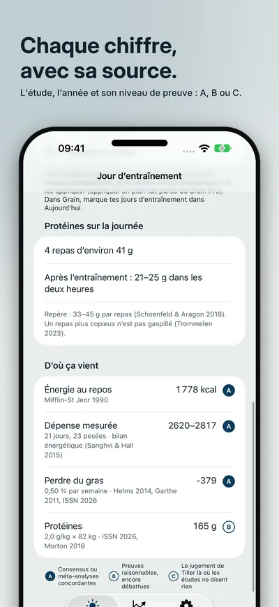
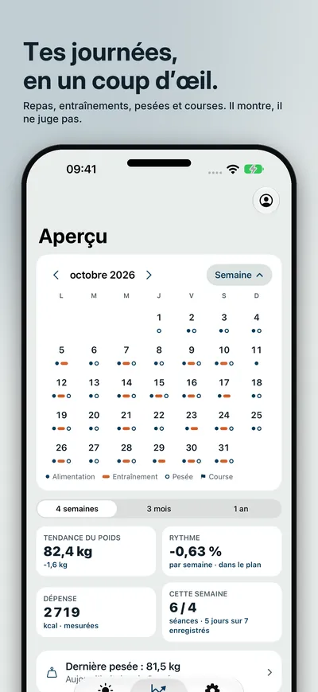
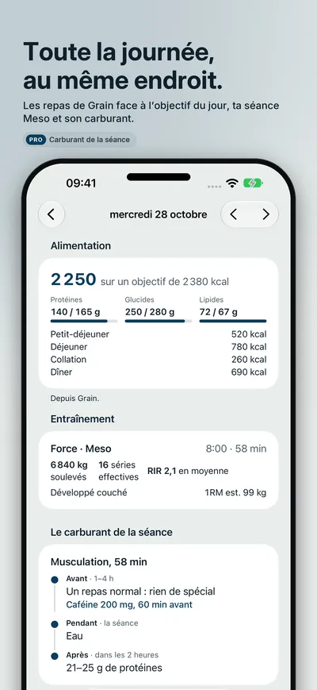
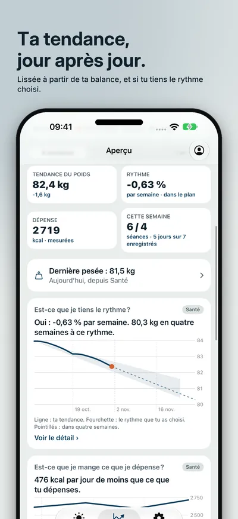
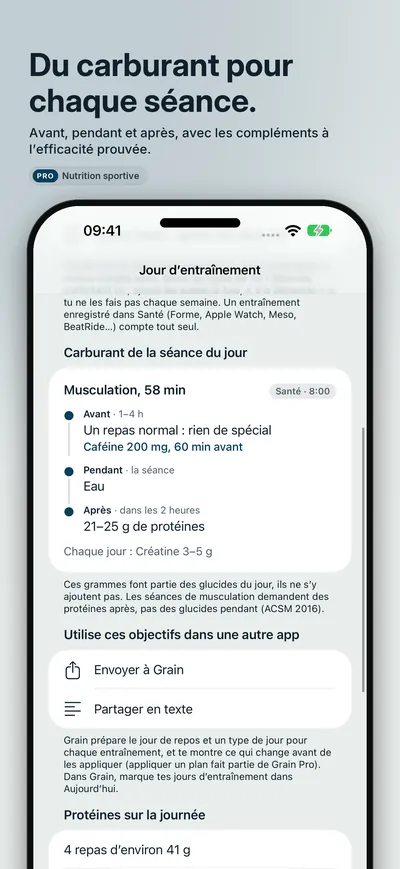
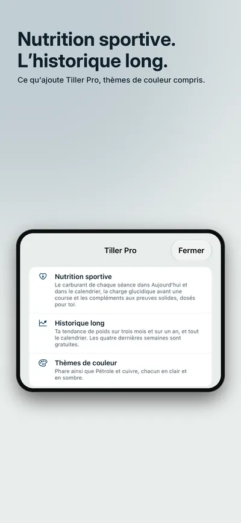

Seize Apps · iOS
Tiller
Tiller calcule tes calories et tes macros pour les jours de repos et d’entraînement, apprend ce que tu dépenses vraiment en comparant ce que tu manges avec la tendance de ton poids, et te propose de nouveaux objectifs chaque semaine, avec le pourquoi. Chaque chiffre dit d’où il vient : l’étude, l’année et la solidité des preuves. Il montre, il ne juge pas : ni vert ni rouge.








Ce qu’elle fait
Une seule chose, bien faite.
- 01 / APPRENDRE
Des objectifs qui apprennent
Perdre du gras, recomposer, maintenir ou prendre, en musculation ou en endurance. Tiller lit ce que tu manges dans Grain ou dans Santé et ton poids sur ta balance, mesure ce que tu dépenses vraiment au lieu de le deviner avec une formule, et te propose tes nouveaux objectifs chaque semaine. Les jours de repos, d’entraînement et de charge glucidique ont les leurs ; dis ce que tu entraînes aujourd’hui, même plusieurs choses, et la journée en tient compte.
- 02 / EXPLIQUER
Chaque chiffre, avec sa source
« D’où ça vient » sur chaque objectif : l’étude, l’année, pourquoi elle s’applique à toi et son niveau de preuve, A, B ou C. Les protéines au fil de la journée, prise par prise. Tu suis les conseils d’un diététicien ? Saisis sa prescription et Tiller la suit, en la réajustant avec ta dépense réelle.
- 03 / VOIR
Tes journées, en un coup d’œil
Un calendrier en haut de l’Aperçu avec ce que tu as mangé face à l’objectif du jour, tes entraînements de Meso, BeatRide ou Santé, tes pesées et tes courses, plus la tendance de ton poids et si tu tiens le rythme choisi. Tiller Pro ajoute la nutrition sportive (le carburant de chaque séance, la charge glucidique avant une course et les compléments à l’efficacité prouvée, dosés pour toi), l’historique long et des thèmes de couleur : un achat unique, avec un essai gratuit de 30 jours.
Confidentialité
À toi, pas à nous.
Tiller n’a pas de compte. Ce qu’il lit dans Santé ne quitte jamais ton iPhone ; ce que tu saisis (ton profil, tes pesées et tes objectifs) reste sur ton appareil et dans ton propre compte iCloud. Les données de Grain et de Meso sont lues sur l’appareil. Des statistiques d’utilisation anonymes et maison, jamais un chiffre te concernant, que tu peux désactiver dans Réglages. Tiller ne remplace pas un diététicien ni un médecin.
Une app de Seize Apps.